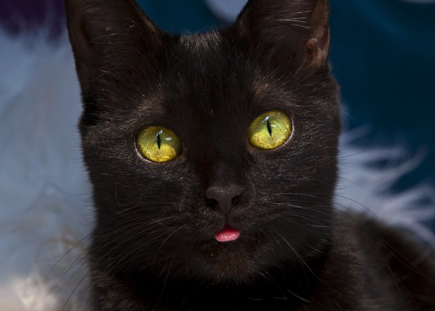
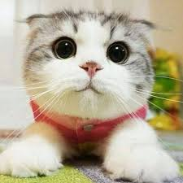
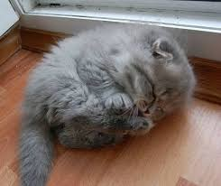

The story of cats
Why do people hate cats so much why do so many people like dogs more than cats? lets start with black cats being bad luck, Why should they be bad luck? It's because people think that they relate to witches and witchcraft thats why people have them as decorations and as costumes during Halloween. but it could also mean good luck as whell if it walkes to you it means good luck and if you see a white hair on a black cat. There also is a day for black cats it is on August 17 and in England it is October 27 which is National Black Cat Day. So this black cat is bad and good luck and it has a day about it.
Why are cats so cute?
Cats are cute because of there big eyes they can also come in many shapes and sizes. Like fat cats, skinny cats, small cats, bid cats, short cats, and long cats. There fur is also diffrent they can be lang hair cats short hair cats, or even no hair at all. Another thing about cats being cut is there attitude they can change from being happy to bitting you. There emmotions can be playful, sleeing, happy, rude, sad, lazy. Most of the time they are moody and will sleep threw out the day and won't do much. But every once in a while they will change from being asleep to running around the house and bitting your feet. Another cute thing that they do is when there asleep you can pick the cat up and you can put the cat back in it's bed. You can only do this if your cat is very lazy.
Why do cats sleep on everything except for there own bed?
Cats have a better smell than we do so they can smell the factory or maybe it's something else. Another resone why they don't sleep in there bed is because of the location. The location could be bad and that they won't sleep in that spot. Cats have a place that they like to sleep at thay have places were they like to sleep and they go threw there sleeping spots.
Why should we like cats?
Well cats can be for many things they can help get mice out of your house. You can cuddle them and plus they are the best ween you have to go on a trip to somewhere. They are really easy to take of all you have to do is give them water and food and thats it. You don't have to do tricks with them because all they do is sleep. and plus they only go to the bathroom in one area they don't go anywhere else so clean up is easy.
Why don't cats and dogs get along?
Cats are very lazy and dogs aren't so when a dog sees a cat the dog wants to play with the cat and of course the cat doesn't want to do anything with the dog. Or t could be that dogs love to chase small animals so when a dog sees a cat it could try to eat it. so when the cat feels like the dog is trying to hurt them they could either run away or attack the dog. But sometimes a cat and a dog are in the same house together and sometimes it goes well and other times it doesn't.
Why does my cat bring dead animals to me?
Sometimes cats like to bring home dead animals to the door or in front of you because cats think that it will make you proud of them. Another reasone why cats do this is because when they have babies the mother would bring home dead animals. So if your cat is bringging you dead animals there just doing something normal.